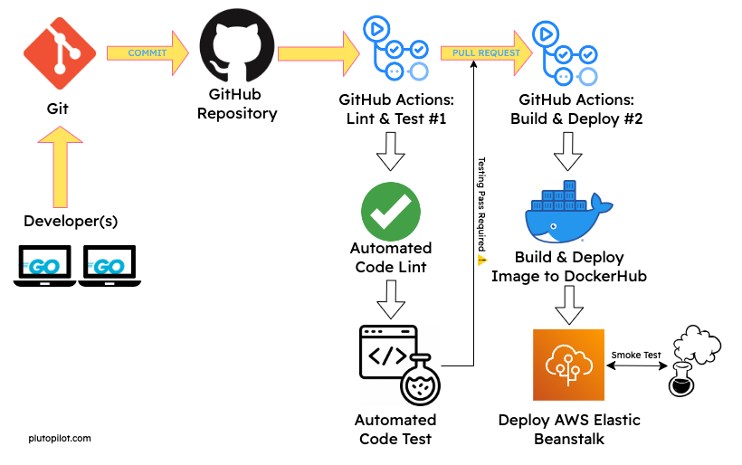

This project displays my DevOps knowledge by deploying a GoLang server with an automated CI/CD pipeline, realized through GitHub Actions and AWS services. The server code is a simple web application that listens on port 8080 and responds with "Hello, world!" when accessed.
Upon each push to any branch except the main, the first GitHub workflow is triggered, performing code linting using golangci-lint and running tests across Ubuntu, macOS, and Windows platforms with Go versions 1.15.x, 1.16.x, and 1.17.x.
When a pull request is merged into the main branch, the second GitHub workflow initiates. This workflow builds a Docker image from the Dockerfile, pushes it to DockerHub, deploys the new version to Elastic Beanstalk, and conducts a smoke test to ensure the server's successful deployment.
